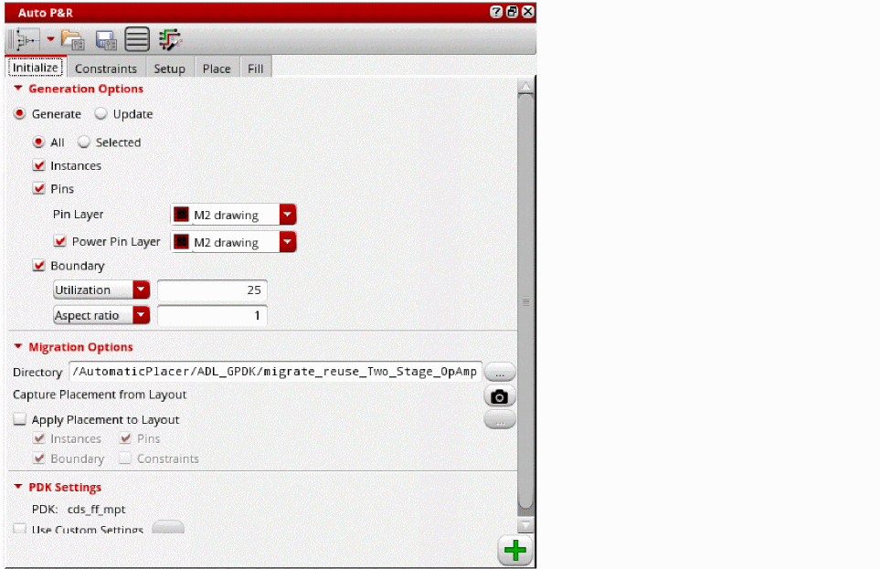

Auto Device Placement and Routing Workspace
To access the Auto P&R assistant, do one of the following:
- Choose Window – Assistants – Auto P&R.
-
Right-click anywhere in the layout window menu bar and choose Assistants – Auto P&R.

The Auto P&R assistant is displayed. The Auto P&R assistant is the integrated, automatic placement solution available in Virtuoso.
Use the button or the aprAssistantMode environment variable to select one of the following automatic placement modes:
- Device: Runs the automated device placer. This is the default mode.
- Standard Cell: Runs the automated standard cell placer.
The tabs and options in the Auto P&R assistant differ based on the selected mode.
The Auto P&R assistant let you initialize, generate constraints, place, and fill the layout designs automatically, as per your requirements. Routing can be done through the Routing Assistant.
Each tab in the Auto P&R assistant represents a task in the automated device placement and routing flow. Proceed step-wise to generate an automatically placed and routed layout design.
The steps or commands in this flow can also be used as standalone options in the regular layout editing environment, as a mix of interactive, assisted, and automated layout creation process.
Auto_Place_Route Workspace
Layout EXL and MXL support the Auto_Place_Route workspace that provides an interface suitable for initializing, placing, and routing designs. The Auto_Place_Route workspace includes the Auto P&R assistant and the Routing assistant with the Interactive Routing option the EXL (or higher) tier or Interactive and Automatic Routing options in the MXL tier.
The following image shows the Auto_Place_Route workspace in Layout EXL:
The following image shows the Auto_Place_Route workspace in Layout MXL:
Related Topics
Virtuoso Automated Device Placement and Routing Flow
Return to top